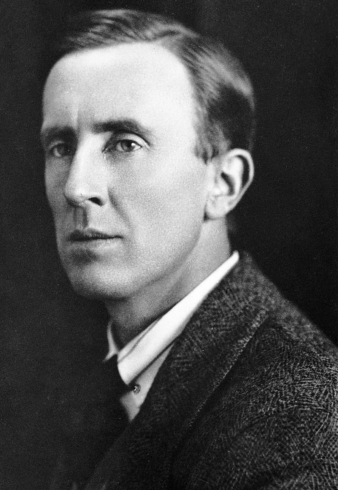

J. R. R. Tolkien
A Breif Summary of the Work & Personal Life of John Ronald Reuel Tolkien
Early Life
Tolkien was born the 3rd of January 1892 into a wealthy, Roman Catholic family. Not
long after Tolkien's birth, his father died of Rheumatic fever. For some reason after his
father's death Tolkien was like: "Dude, I wanna go to Switzerland...", and so he did. His journey
through Switzerland was pretty cool, Tolkien thought. He unsurprisingly drew a lot of inspiration
from his journey as illustrated in his books, most prominently The
Hobbit.
All of the important life events in Tolkien's life are listed in chronoligical order below:
- He is born!
- His daddy dies.
- He travels to Switzerland to taste cheese :)
- An intellectual alliance of four puples called TCBS is formed which he is a member of.
- He starts studying at Oxford Univeristy for The Intellectually Unchallenged.
- He enlists in the british army as the badass he is.
- He gets married!
- He gets Trench Fever, and not the fun kind.
- He leaves the army and starts teaching at the Univeristy of Leeds for The Intellectually Challenged.
- He wants to challenge his intellect again and teaches at Oxford instead.
- He translates Beowulf to English!
After all this Tolkien finally starts producing those juicy books of fantasy so many people adore.
Books
- The Hobbit
- On Fairy Stories
- The Lord Of The Rings
- Fellowship Of The Ring
- The Two Towers
- The Return Of The King